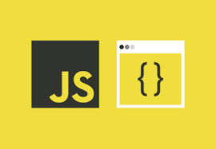
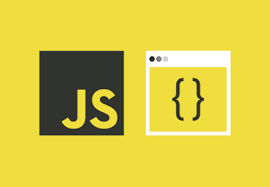

JavaScript es un lenguaje de programación que se utiliza principalmente para crear páginas web dinámicas. Una página web dinámica es aquella que incorpora efectos como texto que aparece y desaparece, animaciones, acciones que se activan al pulsar botones y ventanas con mensajes de aviso al usuario. Técnicamente, JavaScript es un lenguaje de programación interpretado, por lo que no es necesario compilar los programas para ejecutarlos. En otras palabras, los programas escritos con JavaScript se pueden probar directamente en cualquier navegador sin necesidad de procesos intermedios. A pesar de su nombre, JavaScript no guarda ninguna relación directa con el lenguaje de programación Java. Legalmente, JavaScript es una marca registrada de la empresa Sun Microsystems, como se puede ver en http://www.sun.com/suntrademarks/.
La sintaxis de JavaScript es el conjunto de reglas, cómo se construyen los programas de JavaScript;La sintaxis de un lenguaje de programación se define como el conjunto de reglas que deben seguirse al escribir el código fuente de los programas para considerarse como correctos para ese lenguaje de programación. La sintaxis de JavaScript es muy similar a la de otros lenguajes de programación como Java y C.
La sintaxis de JavaScript define dos tipos de valores:
Los valores fijos se denominan literales .
Los valores de las variables se denominan Variables .
La sintaxis de un lenguaje de programación se define como el conjunto de reglas que deben seguirse al escribir el código fuente de los programas para considerarse como correctos para ese lenguaje de programación.
La sintaxis de JavaScript es muy similar a la de otros lenguajes de programación como Java y C. Las normas básicas que definen la sintaxis de JavaScript son las siguientes:
se tienen en cuenta los espacios en blanco y las nuevas líneas:
Como sucede con XHTML, el intérprete de JavaScript ignora cualquier espacio en blanco sobrante, por lo que el código se puede ordenar de forma adecuada para entenderlo mejor (tabulando las líneas, añadiendo espacios, creando nuevas líneas, etc.)Se distinguen las mayúsculas y minúsculas: al igual que sucede con la sintaxis de las etiquetas y elementos XHTML. Sin embargo, si en una página XHTML se utilizan indistintamente mayúsculas y minúsculas, la página se visualiza correctamente, siendo el único problema la no validación de la página. En cambio, si en JavaScript se intercambian mayúsculas y minúsculas el script no funciona.
No se define el tipo de las variables: al crear una variable, no es necesario indicar el tipo de dato que almacenará. De esta forma, una misma variable puede almacenar diferentes tipos de datos durante la ejecución del script.
No es necesario terminar cada sentencia con el carácter de punto y coma (;): en la mayoría de lenguajes de programación, es obligatorio terminar cada sentencia con el carácter ;. Aunque JavaScript no obliga a hacerlo, es conveniente seguir la tradición de terminar cada sentencia con el carácter del punto y coma (;).
Se pueden incluir comentarios: los comentarios se utilizan para añadir información en el código fuente del programa. Aunque el contenido de los comentarios no se visualiza por pantalla, si que se envía al navegador del usuario junto con el resto del script, por lo que es necesario extremar las precauciones sobre la información incluida en los comentarios.
Espacio para realizar ejercicios.


C++ es un lenguaje de programación diseñado en 1979 por Bjarne Stroustrup. La intención de su creación fue extender al lenguaje de programación C mecanismos que permiten la manipulación de objetos.
Ver mas →
Go es un lenguaje de programación concurrente y compilado inspirado en la sintaxis de C, que intenta ser dinámico como Python y con el rendimiento de C o C++.Diseñado por la empresa Google.
Ver mas →
Python es un lenguaje de programación interpretado cuya filosofía hace hincapié en la legibilidad de su código. Se trata de un lenguaje de programación multiparadigma, ya que soporta orientación a objetos.
Ver mas →
Java es un lenguaje de programación y una plataforma informática que fue comercializada por primera vez en 1995 por Sun Microsystems. Hay muchas aplicaciones y sitios web que no funcionarán, probablemente.
Ver mas →